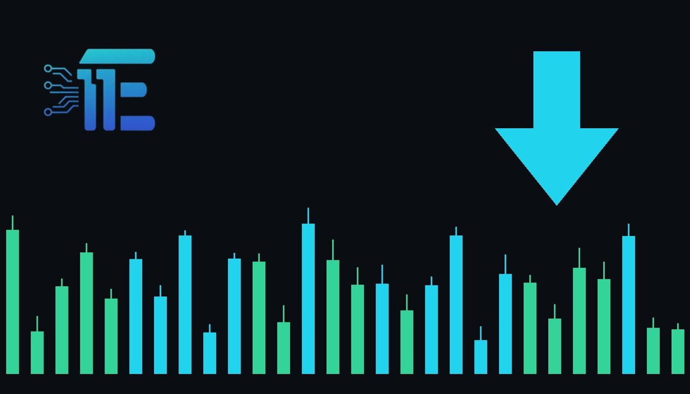

Stocks Rally and Crude Plummets on Middle East Ceasefire Hopesទីផ្សារភាគហ៊ុនឡើងថ្លៃស្របពេលតម្លៃប្រេងធ្លាក់ចុះចំពេលមានក្តីសង្ឃឹមឈប់បាញ់នៅមជ្ឈិមបូព៌ា
XAU/USD impact: ▼ Bearishផលប៉ះពាល់លើ XAU/USD: ▼ ធ្លាក់

Crude oil prices tumbled roughly seven percent on prospects of a Middle East ceasefire, sparking broad risk-on sentiment across major indexes. This geopolitical cooling reduces safe-haven demand, potentially pressuring the XAU/USD pair.
តម្លៃប្រេងឆៅបានធ្លាក់ចុះប្រហែលប្រាំពីរភាគរយដោយសារក្តីសង្ឃឹមនៃការឈប់បាញ់នៅមជ្ឈិមបូព៌ា ដែលជំរុញឱ្យមានការវិនិយោគលើហានិភ័យ។ ការធ្លាក់ចុះនៃភាពតានតឹងនេះអាចកាត់បន្ថយតម្រូវការមាសជាទ្រព្យសុវត្ថិភាព។
Crude oil prices experienced a sharp decline, plummeting roughly seven percent as optimism regarding potential Middle East ceasefire prospects entered the market. This sudden shift in energy markets sparked broad risk-on sentiment across major stock indexes, altering the immediate trading landscape for commodities.
តម្លៃប្រេងឆៅបានធ្លាក់ចុះយ៉ាងខ្លាំងប្រហែលប្រាំពីរភាគរយ ដោយសារមានសុទិដ្ឋិនិយមជុំវិញលទ្ធភាពនៃការឈប់បាញ់នៅមជ្ឈិមបូព៌ា ដែលបានចូលមកក្នុងទីផ្សារ។ ការផ្លាស់ប្តូរទស្សនវិស័យនេះបានជំរុញឱ្យមានអារម្មណ៍វិនិយោគលើហានិភ័យទូទាំងលិបិក្រមភាគហ៊ុនធំៗ ដែលធ្វើឱ្យខុសប្លែកពីសកម្មភាពជួញដូរទំនិញមុនៗ។
For XAU/USD traders, geopolitical developments and energy shocks serve as vital transmission channels via safe-haven demand and inflation expectations. A potential easing of regional hostilities directly reduces the urgency for defensive positioning, lessening the appeal of safe-haven assets like gold. At the same time, falling crude prices tend to subdue broader inflation pressures, which can influence interest rate expectations and real yields.
សម្រាប់អ្នកជួញដូរ XAU/USD ព្រឹត្តិការណ៍ភូមិសាស្ត្រនយោបាយ និងការប្រែប្រួលថាមពលគឺជាបណ្តាញបញ្ជូនដ៏សំខាន់តាមរយៈតម្រូវការទ្រព្យសុវត្ថិភាព និងការរំពឹងទុកអតិផរណា។ ការបន្ធូរបន្ថយភាពតានតឹងក្នុងតំបន់អាចកាត់បន្ថយតម្រូវការការពារខ្លួន និងកាត់បន្ថយភាពទាក់ទាញនៃមាស។ ជាមួយគ្នានេះដែរ ការធ្លាក់ចុះតម្លៃប្រេងក៏ជួយទប់សម្ពាធអតិផរណាផងដែរ ដែលអាចប៉ះពាល់ដល់ការរំពឹងទុកអត្រាការប្រាក់។
A sustained de-escalation in the Middle East would typically pressure gold prices as capital flows back into riskier equities and higher-yielding instruments. Conversely, any renewal of hostilities or a resurgence in energy price fears would quickly revive safe-haven demand, supporting gold as a hedge against geopolitical and inflationary instability.
ការបន្ធូរបន្ថយភាពតានតឹងនៅមជ្ឈិមបូព៌ាជាបន្តបន្ទាប់អាចដាក់សម្ពាធថយក្រោយលើតម្លៃមាស នៅពេលដែលដើមទុនហូរត្រឡប់ចូលទីផ្សារភាគហ៊ុនដែលមានហានិភ័យខ្ពស់។ ផ្ទុយទៅវិញ ការផ្ទុះឡើងវិញនៃជម្លោះ ឬការព្រួយបារម្ភអំពីតម្លៃថាមពលនឹងស្តារតម្រូវការមាសជាទ្រព្យសុវត្ថិភាពឡើងវិញយ៉ាងឆាប់រហ័ស។
Market participants should monitor ongoing diplomatic developments in the region, subsequent crude oil price stability, and broader shifts in risk sentiment across global equities. Tracking these interrelated factors will help gauge whether defensive positioning is returning to the market.
អ្នកជួញដូរគួរតែតាមដានការវិវត្តផ្នែកការទូតដែលកំពុងបន្តក្នុងតំបន់ ស្ថិរភាពតម្លៃប្រេងឆៅ និងការប្រែប្រួលទូទៅនៃអារម្មណ៍ទីផ្សារលើភាគហ៊ុនសកល។ ការតាមដានកត្តាទាំងនេះជួយវាយតម្លៃពីនិន្នាការនៃទីផ្សារមាសបន្តទៀត។
Key takeawaysចំណុចសំខាន់ៗ
- Crude oil prices dropped roughly seven percent on Middle East ceasefire prospects.
- តម្លៃប្រេងឆៅបានធ្លាក់ចុះប្រហែលប្រាំពីរភាគរយដោយសារក្តីសង្ឃឹមឈប់បាញ់នៅមជ្ឈិមបូព៌ា។
- A reduction in geopolitical tensions lowers safe-haven demand and inflationary pressures, impacting gold.
- ការថយចុះភាពតានតឹងភូមិសាស្ត្រនយោបាយកាត់បន្ថយតម្រូវការទ្រព្យសុវត្ថិភាព និងអតិផរណាដែលប៉ះពាល់ដល់មាស។
- Traders should monitor diplomatic updates and broader risk sentiment across global equity markets.
- អ្នកជួញដូរគួរតែតាមដានព័ត៌មានការទូត និងអារម្មណ៍ទីផ្សារភាគហ៊ុនសកល។
Original commentary by THE MARKET CODE, based on public reporting from Yahoo! Finance: GC=F News. Written with the help of AI. Educational only, not financial advice.
មតិវិភាគដើមដោយ THE MARKET CODE ផ្អែកលើការរាយការណ៍សាធារណៈពី Yahoo! Finance: GC=F News។ សរសេរដោយមានជំនួយពី AI។ មាតិកាអប់រំប៉ុណ្ណោះ មិនមែនជាដំបូន្មានហិរញ្ញវត្ថុទេ។